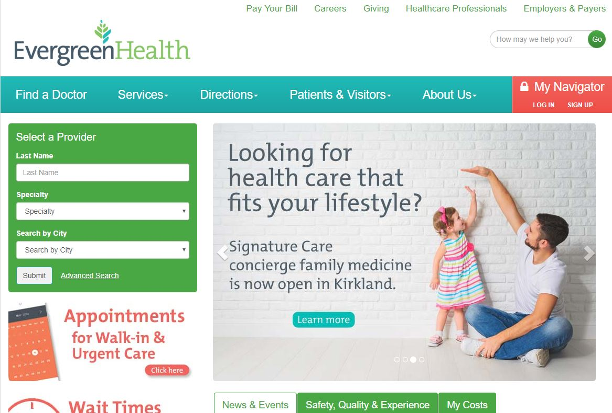

The Website:
EvergreenHealth.com is the main page of the EvergreenHealthcare Network. Providing services in King and Snohomish County, EvergreenHealth has a dizzying array of information to provide to residents and patients of the area.
As the designated community hospital for Snohomish County, EvergreenHealth is expected to uphold the highest standard of accessibility and inclusivity in providing both medical care and information to the general public.
With accessibility and inclusivity so present in the fabric of the network, I was excited to review their website to see what provisions (if any) the developers for the website have made to accommodate accessibility standards online.
 Image of EvergreenHealth Main PageThe Criteria:
What I'm Looking For:
- Alt-Tags - Are the images and other graphics labeled with alt-tags so that a screen reader will be able to describe the image?
(note: I do not have a screen reader so I will be looking at the code directly.) - Contrast -Does the website make use of contrast ratios in order to make the text easy to read.
- Layout - Does the website use a hierarchy or layout which makes sense? Does this travel down to text, are there headers, paragraphs. How is the information divided up.
- Documented Links - Are the links properly documented with where they go. Are any of the links mislabeled or not labeled at all?
Alt-Tags
Screenshot of EvergreenHealth Mainpage with Dev Consol, the tags have correctly labeled the photo as 'man plays with daughter'The Good:
Adding alt tags is somewhat tedious, so I was pleasantly surprised to see that all the images I tested had alt tags filled out. Even the image carousel had a description in the alt tags. Alt tags are imperative to users who are using screen readers; especially when the images provide information vital to understand the page.
Alt tags are imperative to users who are using screen readers; especially when the images provide information vital to understand the page.
Screenshot of EvergreenHealth Mainpage with Dev Consol, the tags have incorrectly labeled the photos as 'Image of a Clock' when it really is an image that says 'wait times for emergency care"The Bad:
Although I was excited to see that the alt tags were filled out, I was disappointed to see that the information was not always the most accurate or that it had left out some important information.
Above in the image of the man and his daughter, the tag leaves at the image is an advertisement for "Concierge Family Medicine" and below, the image is labeled as an "analog clock" however there is no mention of it being a link for "Wait Times of Emergency Care".
Contrast
The Good:
The black text on a white background works well for reading and makes the text easy to see. The page makes use of headings and ample white space make the page easy to follow at a glance. Also, boxing similar information together creates a sense of cohesion.
Example of contrast on page, text is black and white. There are green and white linksThe Bad:
Although the regular text is easy to read, my concern is that the teal hyperlinks are much more difficult to read on the white background. The lines around the edges seem to fade away. Additionally, the white text on top of the green background is also much harder to read than the black text was.
Layout
Example of neatly-ordered EvergreenHealth WebpageThe Good:
Information is grouped in hierarchies, typically hidden underneath a drop-down menu. On the pages, information is again grouped together in logical ways making it relatively easy to locate information within the page.
The Bad:
Within the hierarchies there are some slight issue with grouping. Classes, for example are grouped under the "Patients & Visitors" Tab of the Nav bar (not the easiest place to find when a user is searching). Similarly some of the pages are organized very well while others are quite crowded.
Documented Links
Example of neatly-labeled links on the EvergreenHealth siteThe Good:
Every link I checked was either labeled to where it went in the name or had an elaborate alternate title indicating where the link went... sometimes both. I'm really impressed with this. I have nothing negative to say.
Conclusion
Accessibility is a silent necessity within web development. It is something that is needed in order to make sure that everyone will be able to understand the information on a website.
My take-aways from this test (small changes that might help user experience) are:
- Make sure to label well with alt-tags, make sure they are acurately describing what they are representing
- Adjust the lighter-colored text or add a border to make it easier to read on the white background.
- Adjust the hierarchies to make the information more easy to locate. Try to keep like information together or perhaps add tabs to accommodate information that is different.
With just a few easy changes, the site would be much more accessable for all users.